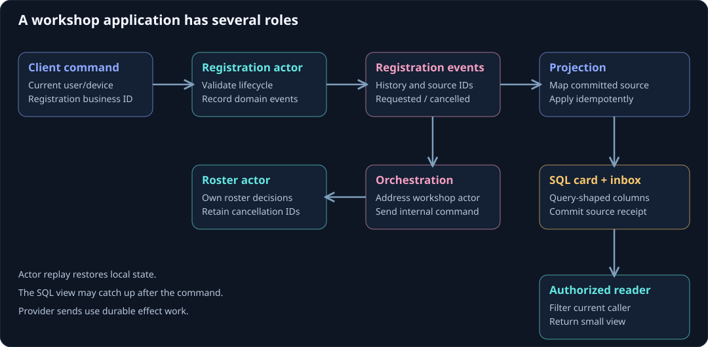

Build a workshop workflow
A counter shows the actor API. A workshop registration shows how the pieces fit in an application. This example lets an attendee request a registration, records it in a workshop roster, projects a registration card to SQL, and offers a scoped reader for the UI.
On this page
The downloadable workshop example contains the original messages, actors, listeners, read model, SQL writer, schema, and application helpers. It is a .NET 10 class library of application building blocks. Configure a host, provider credentials, migrations, and subscriptions before serving it; it does not include a Web API or hosted notification provider.

Try the code
Clone the public docs repository and build the example with the .NET 10 SDK:
git clone https://github.com/Fifty3North/troolio-docs.git
cd troolio-docs
dotnet build examples/workshop/Workshop.csproj -c Release
The SQL read path uses RegistrationCardsProjection and SqlRegistrationCards. The optional linked RegistrationDetails view illustrates the resolver API and requires ordered, deduplicated source delivery. Start with the host guide to register the assemblies and application services for your chosen path.
1. Give each actor a responsibility
A registration actor owns one registration's lifecycle. A workshop roster actor owns the registration IDs recorded for one workshop. The UI reads small cards from SQL instead of asking every registration actor for its state.
This example records a request. A finite seat-capacity invariant would need its own authoritative decision in the workshop actor or a selected multi-participant route. The two-role example alone does not guarantee a seat reservation across stores.
2. Send intent with trusted context
The application allocates a stable registration ID and obtains the user and device from its authenticated boundary. That ID is also the actor key.
public static Task RequestAsync(ITroolioClient client, Guid registrationId, Guid workshopId,
string displayName, Guid authenticatedUserId, Guid verifiedDeviceId, Guid correlationId)
{
Metadata headers = MessageContext.AtIngress(correlationId, authenticatedUserId, verifiedDeviceId);
return client.Tell<IRegistrationActor>(registrationId.ToString("D"),
new RequestRegistration(headers, registrationId, workshopId, displayName));
}
Keep correlation across the related interaction. Ordinary Troolio dispatch supplies transaction and message relationships as described in metadata. A retry must still be reconciled against the registration's state and the selected route's operation identity when that route is used.
3. Validate and record the outcome
The registration actor delegates decisions to pure domain rules and state changes to event application:
public sealed class RegistrationActor : EventSourcedActor<RegistrationState>, IRegistrationActor
{
public RegistrationActor(IStore store, IConfiguration configuration) : base(store, configuration)
=> State = RegistrationState.Empty;
public IEnumerable<Event> Handle(RequestRegistration command)
{
if (!Guid.TryParse(Id, out Guid actorId) || actorId != command.RegistrationId)
throw new ArgumentException("The actor key must match the registration ID.");
return RegistrationRules.Request(State, command);
}
public IEnumerable<Event> Handle(CancelRegistration command) => RegistrationRules.Cancel(State, command);
public void On(RegistrationRequested e) => State = State.Apply(e);
public void On(RegistrationCancelled e) => State = State.Apply(e);
public RegistrationState Handle(GetRegistration _) => State;
}
A valid request produces RegistrationRequested; cancellation produces RegistrationCancelled. The state stores the registration, workshop, attendee, display name, and status. A duplicate request with identical business details returns no new domain event in the ordinary sample; a conflicting reuse of the registration ID is rejected. Selected no-op completion has its own optional capability and is not implied by this example.
4. React with another actor command
The orchestration listener forwards the event's headers and addresses the workshop roster using the workshop ID carried by the event.
[OrchestrationStreamSubscription(typeof(RegistrationActor))]
public sealed class WorkshopEnrolmentOrchestration : OrchestrationActor
{
public Task On(EventEnvelope<RegistrationRequested> envelope) =>
System.ActorOf<IWorkshopRosterActor>(envelope.Event.WorkshopId.ToString("D"))
.Tell(new AddAttendee(envelope.Event.Headers, envelope.Event.WorkshopId,
envelope.Event.RegistrationId, envelope.Event.AttendeeId));
public Task On(EventEnvelope<RegistrationCancelled> envelope) =>
System.ActorOf<IWorkshopRosterActor>(envelope.Event.WorkshopId.ToString("D"))
.Tell(new RemoveAttendee(envelope.Event.Headers, envelope.Event.WorkshopId,
envelope.Event.RegistrationId));
}
The roster stores registration IDs rather than incrementing an unqualified count. A repeated add can therefore be recognized. It also records removal tombstones so a late add after cancellation cannot resurrect the entry. It returns the Tell task so the listener's work remains observable to the caller's protocol.
This is ordinary event-to-command orchestration. For a selected atomic workflow, register the reviewed planning handlers and durable closure/store contracts described in orchestration and atomic commit.
5. Project a card for readers
A separate listener turns a committed registration event into the view needed by the UI:
[ProjectionStreamSubscription(typeof(RegistrationActor))]
public sealed class RegistrationCardsProjection(IRegistrationCardWriter writer) : ProjectionActor
{
public Task On(EventEnvelope<RegistrationRequested> envelope)
{
RegistrationCard card = RegistrationCards.From(envelope.Event);
return writer.ApplyAsync(card, RegistrationCards.Source(envelope, card), CancellationToken.None);
}
public Task On(EventEnvelope<RegistrationCancelled> envelope)
{
RegistrationCard card = RegistrationCards.From(envelope.Event);
return writer.ApplyAsync(card, RegistrationCards.Source(envelope, card), CancellationToken.None);
}
}
The SQL writer atomically records its source identity and replaces the card only when an appropriate newer source snapshot arrives. It rejects a changed domain payload for a retained source identity. Both event variants carry the fields needed for the card, so this teaching model can ignore an older full snapshot safely. Delta-based projections need stricter ordering and gap recovery.
Apply schema.sql through the application's migration process and register IRegistrationCardWriter with the host. This writer is an application read-model implementation; it is separate from the framework's selected event transaction store.
6. Read with the caller's access scope
SqlRegistrationCards.GetForUserAsync queries one registration ID and the current authenticated attendee ID in SQL. Unauthorized and absent rows both yield no card. A staff view would need a separate reviewed authorization rule and bounded query.
A command can finish before the card catches up. Represent that state honestly in the UI, and use realtime refresh hints to trigger another authorized read after the projection commits.
7. Add effects through durable work
Creating a notification fact in a projection is different from sending a confirmation through a provider. Keep the provider request behind durable intent state, a stable idempotency key, and recovery. Replaying the registration actor or rebuilding the SQL card should not resend confirmations.
Follow notifications and background work for that design. Then study projection design, read models, and idempotency before extending this example.